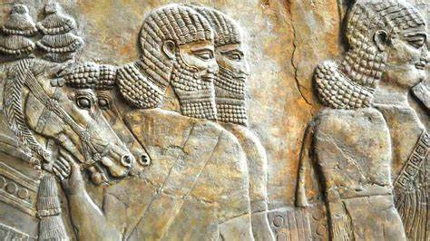
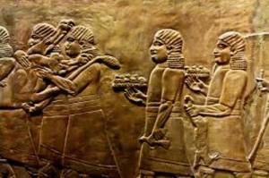
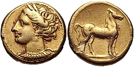

Akkadian Empire's Economy
The Akkadian Empire, which existed from approximately 2334 to 2154 BCE, was one of the first ancient empires to establish a sophisticated and diverse economy. Here are key aspects of its economic structure:
Agriculture
Fertile Crescent: The empire was located in the Fertile Crescent, an area known for its fertile land and favorable climate for agriculture. This allowed for the cultivation of various crops, including barley, wheat, and dates.
Irrigation Systems: Advanced irrigation techniques were employed to maximize agricultural productivity. Canals, dikes, and reservoirs were built to control the flow of water from the Tigris and Euphrates rivers.
Surplus Production: The efficient agricultural practices led to surplus production, which supported urbanization and the development of large cities.

Trade
Extensive Trade Networks: The Akkadian Empire established extensive trade networks that reached as far as Anatolia, the Indus Valley, and possibly even Egypt. Goods such as timber, metals, precious stones, and textiles were traded.
Commodities: Key traded commodities included barley, wool, fish, and oil. The empire also imported raw materials that were not available locally, such as wood from Lebanon and metals from Anatolia.
Trade Centers: Major cities like Akkad and Ur served as central hubs for trade, facilitating the exchange of goods and cultural ideas.

Craftsmanship and Industry
Artisans and Craftsmen: Skilled artisans produced a variety of goods, including pottery, textiles, jewelry, and metalwork. These goods were often traded or used in religious and cultural ceremonies.
Standardization: The Akkadian Empire is credited with standardizing weights and measures, which facilitated trade and economic transactions across the empire.
Administration and Economy
Centralized Administration: The Akkadian Empire had a centralized administration that oversaw economic activities, collected taxes, and managed resources. The bureaucracy ensured efficient management and distribution of goods.
Taxation: Taxes were collected in the form of agricultural produce, livestock, and crafted goods. These taxes supported the state and its military endeavors.
Currency and Trade
Barter System: While there was no coinage system, the economy largely operated on a barter system, with goods and services exchanged directly.
Silver and Grain: Silver and grain were often used as standard units of value for large transactions and trade agreements.

The Akkadian Empire's economic success was built on its agricultural surplus, extensive trade networks, skilled craftsmanship, and effective administrative system. These elements not only sustained the empire but also facilitated its expansion and cultural influence across the ancient Near East.
Sources
Source 1
Source 2
Source 3